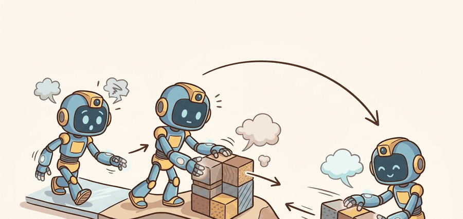

Section 44.3: Simulating touch (e.g., tactile sim in Isaac)
"Simulated touch is a promise about which contact features will survive reality."

Figure 44.3A: Tactile simulation is a pipeline from contact mechanics to synthetic sensor output, and the weak link depends on which tactile quantity the downstream task needs.
A Tactile Sim Engineer
Big Picture
Tactile simulation matters because collecting large real tactile datasets is expensive, but the simulator must decide which parts of tactile reality it aims to preserve and which it approximates.
This section explains the main tactile simulation styles: rendering-based optical tactile simulators, mechanics-focused deformation models, and integrated simulators in frameworks such as Isaac or MuJoCo extensions.
It ties simulation, data generation, and sim-to-real transfer by making the sensor model explicit rather than hiding it behind a generic domain-randomization story.
Action Is The Test
A tactile simulator is only useful if you can state which contact quantities it preserves well enough for the downstream policy or estimator you care about.
Figure 44.3.1: Tactile simulation is a pipeline from contact mechanics to synthetic sensor output, and the weak link depends on which tactile quantity the downstream task needs.
Theory
Many tactile simulators split the problem into rigid-body contact from a base physics engine and sensor rendering or deformation synthesis on top. That makes them fast, but it means their guarantees are task-specific rather than universal.
For optical tactile sensors, image realism can matter more than exact force fidelity if the downstream model reads local geometry from marker motion or shading. For force or compliance tasks, the opposite can be true.
The simulator consumes contact state from a physics engine, synthesizes a tactile observation according to a sensor model, and feeds it into a learning or control stack. The real evaluation question is whether control behavior transfers, not only whether the tactile frame looks plausible.
Algorithm: Tactile Sim Gap Check
Define the tactile quantity your downstream task actually needs.
Choose a simulator whose abstractions preserve that quantity well enough.
Generate paired sim and real tactile episodes under matched contact conditions.
Measure both frame-level similarity and control-level transfer for the same task panel.
Worked Example
# Compare a simulated and real tactile scalar proxy.
sim_depth = [0.12, 0.18, 0.21]
real_depth = [0.10, 0.15, 0.19]
mean_gap = round(sum(abs(a - b) for a, b in zip(sim_depth, real_depth)) / len(sim_depth), 3)
print({"mean_depth_gap": mean_gap, "usable_for_pretraining": mean_gap < 0.03})
Code Fragment 44.3.1 is a reminder that tactile simulation should be audited against the quantity the downstream model will actually use.
Expected output: The expected result declares the simulator usable for a pretraining stage under this simple proxy. In a full system, that claim still needs downstream control validation on the same task panel.
Library Shortcut
TACTO remains a standard optical tactile simulator, while MuJoCo forks and Isaac-based tactile projects extend the ecosystem. Each route saves effort only if the team records the sensor assumptions and real-world comparison panel.
Practical Recipe
Match simulated and real contact episodes as closely as possible before comparing outputs.
Audit the tactile quantity that the downstream learner will consume, not an arbitrary image similarity score.
Randomize sensor assumptions within plausible limits rather than inventing unrealistic noise.
Keep one transfer ledger that stores both frame-level and behavior-level gap measures.
Use real tactile clips to spot the first failure mode your simulator cannot reproduce.
Common Failure Mode
Teams often report tactile simulation quality with beautiful rendered frames but never show whether the same policy or estimator behaves similarly on real hardware. For embodied systems, that omission is fatal.
Practical Example
Plug insertion or peg alignment can benefit enormously from tactile simulation if the simulator captures the local geometry cues the policy uses, even if it does not reconstruct exact absolute force values.
Memory Hook
A tactile simulator can be wrong in two impressively different ways: it can look real and control badly, or look fake and still teach the policy the right contact habit.
Research Frontier
Differentiable tactile simulation, faster GPU pipelines, and Isaac-integrated visuo-tactile stacks are improving quickly. The core systems job is still to define what realism means for the task at hand.
Self Check
What exact tactile quantity does your simulator need to preserve for your downstream controller to behave correctly?
This section is ideal for teaching task-grounded simulation fidelity. Students learn that no simulator is realistic in the abstract; it is realistic relative to a target quantity and downstream use.
It also reveals why sim-to-real audits should include control trajectories, not just rendered sensor examples. The policy might ignore visually striking simulator flaws while failing on a small missing slip cue.
Practical Tool Choices For This Section
Tool or Library
Role in the Topic
Builder Advice
TACTO
Optical tactile rendering
Strong baseline when working with DIGIT-like sensors and PyBullet-style pipelines.
TACTO-MuJoCo
MuJoCo tactile integration
Useful when the rest of the manipulation stack already lives in MuJoCo.
Isaac-based tactile projects
High-throughput tactile data generation
Good when large-scale parallel simulation and policy learning are central.
Mini Lab
Generate a tiny synthetic tactile dataset and compare it to three matched real contacts. Explain which differences would matter for control and which would not.
If transfer fails, distinguish whether the simulator missed a frame-level cue, a dynamics cue, or a controller-timing cue. Those gaps call for different repairs.